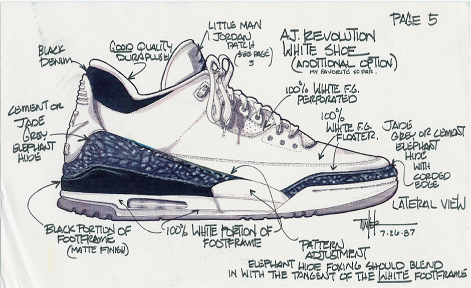

The Air Jordan 1 was designed by Peter Moore and was released in 1985.After the partnership with Michael and the Swoosh was set, it was up to Nike designer Peter Moore to create the first signature shoe for the man that would become the game’s greatest player ever. We can probably all agree that Mr. Moore succeeded. The Air Jordan 1 released in 1985, at a retail price of $65. Believe it or not, that was a lot of money for a sneaker back then, which meant the Air Jordan line was elevated to a higher tier right from the beginning.
The Jordan 1 lacked the sophisticated technology that the Jordan Brand would be known for with later installments. Nike was dedicated to giving Michael Jordan his own shoe and brand to grow with. That commitment is clear when you view the shoe’s distinctive logo. Moore designed a wings symbol, a precursor to the Jumpman logo, that was placed on the upper ankle of the shoe. However over the years we have seen the technology catch up with that of the Jordan 4 and 11 sneakers.
The Air Jordan 1 is plain and simply the most important model of our entire sneaker culture. In every practical sense, the kickstart to the sneaker industry began when the stars of Michael Jordan and Nike aligned in 1984, birthing the legendary shoe. From the many original releases in 1985-86 to the virtually uncountable number of retro variations and colorways since, thirty years later the Air Jordan 1 is just as popular as ever. Now with the recent string of “remastered” editions of the silhouette featuring a return to full “Nike Air” branding and closer attention to materials and shape, the Air Jordan 1 is set to impress old fans all over again and win the hearts of the next generation of sneaker collectors. In this latest edition of Jordan 101, we celebrate the Air Jordan 1 with a look back at everything that makes it the most significant sneaker of all time.